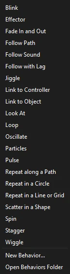

Tutorials
Write your own behavior
Write a behavior in JavaScript from an example, see it update as you save, and give it settings of its own.
This page is also a lesson inside Phoenix: choose and start Write your own behavior, and Phoenix points at each control as you go. It takes about 10 minutes.
To follow along here instead, download the starting document, own-behavior.fla, and open it with .

The behaviors in the Behaviors panel are small JavaScript files, and you can write your own the same way: a name, its settings, and a function that says how to move the instance on each frame.
You don't need to know much JavaScript; you will start from a working example.
1. Select the ball
Press V for the Selection tool and click the ball on the stage.
2. Open the Behaviors panel
Choose Window > Behaviors if it is not showing. It lists what is on the selection and the settings of each.
3. Start a new behavior
Click Add Behavior and choose New Behavior... at the bottom. Call it Drift.
Phoenix writes an example behavior into your Behaviors folder and opens it in the script editor.
4. Read the example
The file calls behavior({...}) with:
nameanddescription, as the panel shows them;params, its settings, each becoming a slider;evaluate(ctx, p), run for each frame:ctxsays which frame and time it is,pholds the settings.
It returns what to add to the instance: here x grows with time, and y bobs up and down.
5. Add it
Back in Phoenix, click Add Behavior and choose Drift, now in the list. Play: the ball drifts right, bobbing.
6. Change the code
In the script editor, change Math.sin(ctx.time * 2) to Math.sin(ctx.time * 6) and save with Ctrl+S.
Phoenix reads the file again as soon as it is saved: the ball bobs faster. An error shows in the Output panel, and the ball stays where its keys put it.
7. Give it a setting
Add a setting for how fast it bobs. In params, after bob, add:
rate: { label: "Bobs per second", value: 1, min: 0, max: 10, step: 0.1 }and use it: Math.sin(ctx.time * 2 * Math.PI * p.rate). Save, and a Bobs per second slider appears in the panel.
What you did
You wrote a behavior, changed it live, and gave it a setting.
ctx has more: random() and noise() for steady randomness, keyedAt() for the keyed motion on other frames, other() for other instances, loudness() for the soundtrack. Return {copies: [...]} to make copies. See Help and the Behaviors page for the whole list. Your behaviors are in Add Behavior > Open Behaviors Folder.
For everything this tutorial touches on, see Behaviors.